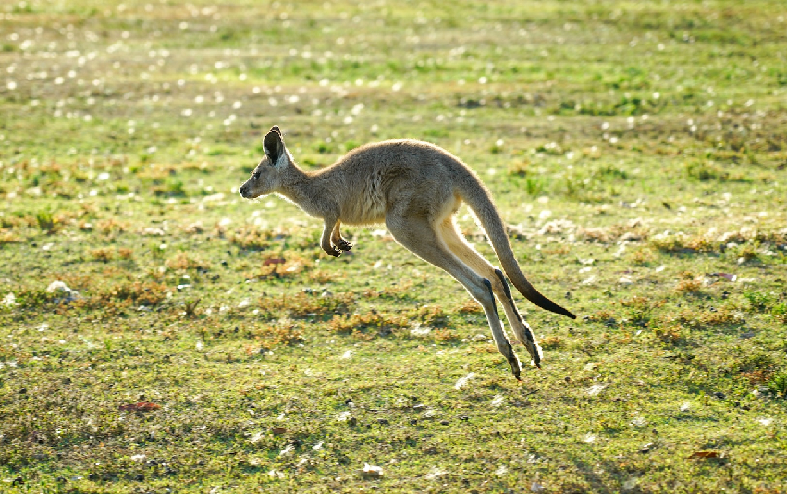
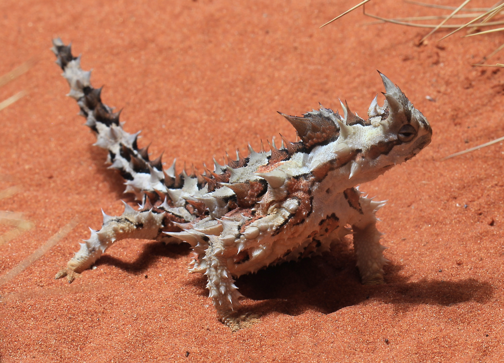
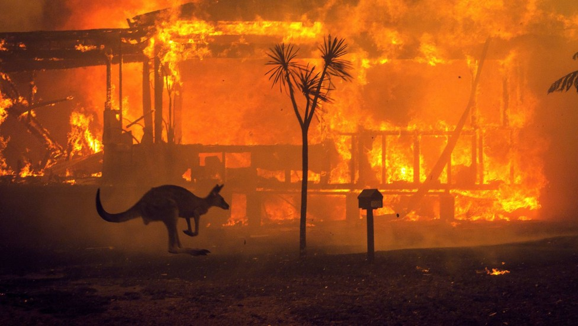

Biodiversidade da Austrália
A Austrália é um país que valoriza muito a vida marinha e a natureza,saiba que é bem provável se deparar com animais do grupo marsupiais, como cangurus e coalas – considerados símbolos do território australiano e os vombates; animais robustos e escavadores, chegando a pesar até 36 quilos.
A Austrália abriga uma biodiversidade única e, por isso, bastante frágil. Há, no país, quase 30 mil espécies endêmicas identificadas entre animais e plantas. A cadeia montanhosa do país é conhecida como Alpes Australianos. A Tasmânia possui um dos ares mais limpos (despoluídos) de todo o mundo.
Quanto ao relevo, o país é caracterizado pela predominância de planaltos, no entanto, com elevações suaves, tendo em vista que tal morfologia é antiga. Em razão deste fato, grande parte do solo do país sofreu muitos desgastes, promovidos por processos erosivos
A vegetação na Austrália é de savanas ou de eucaliptos (temperada). O clima é tropical na costa, e quente no interior, com temperaturas que variam entre 19° (inverno) e 35° no verão.


Desmatamento
A Austrália tem um dos piores registros de extinção do mundo,por esses motivos o governo criou um plano de 10 anos para evitar que mais espécies moram no país, protegendo suas plantas e animais mais ameaçados
.
Ao lançar o plano no Taronga Zoo, em Sydney, a Ministra do Meio Ambiente e Água da Austrália, Tanya Plibersek, disse que o governo trabalhista tinha uma “meta muito ambiciosa” de conservar mais de 30% da massa terrestre da Austrália até 2030.Nos últimos anos, a vida selvagem da Austrália sofreu devido a desastres naturais, desmatamento, predadores selvagens e os efeitos da crise climática, incluindo os incêndios do “Verão Negro” que devastaram os estados do sul em 2019-20, matando ou deslocando quase 3 bilhões de animais, de acordo com estimativas do World Wide Fund for Nature (WWF).
O governo diz que as espécies prioritárias foram selecionadas com base em vários fatores, incluindo sua singularidade e risco de extinção. As áreas incluem as florestas do extremo norte de Queensland, o Parque Nacional Kakadu no Território do Norte e a Ilha Kangaroo no sul da Austrália.
